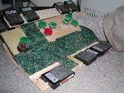
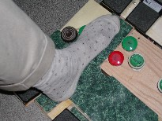
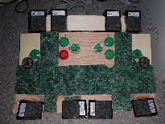

| printer-friendly versione-mail Klarlund | previous next | Nils Klarlund home |
|
By Nils Klarlund.
Copyright ©Nils Klarlund, 2002.
|
XSLT & |
Contents
|
Input devices: a usage-driven approachFoot Pedals
Obviously, foot pedals cannot replace the keyboard. But it is intriguing that many of us use our strongest limbs to control safety-critical pedals while going to or from work, while the same limbs stay underemployed under the desk all day. The problem is that using just two a three pedals as in the car will not cover enough of repetitive work to make a difference. For example, even processing incoming e-mail requires at least five keys (next message, previous message, scroll down, scroll up, and delete message). And, naturally, typing with our feet must be considered a hopeless task for most of us. Speech recognition offers an excellent alternative to typing, even as it seems hopeless at repetitive work. Saying "page up", "page up", "page down" to browse through a web page speaks for itself. So, maybe the combination of speech recognition and foot pedals is the combination that will effectively offload the hands? This was my thinking when I started using speech recognition six years ago. Initially, I used five or six foot switches glued to a wooden board. Through several iterations of pedals arrangements, I arrived at a basic layout that can be seen in the photos below.



(For a technical disclosure, see
US5889510
Foot-operated keyboard device)
In this design, each foot may operate seven front keys placed around the sides and front of the foot. Most common keys are present: the arrow keys, enter, backspace, space, and tab. In addition, left and right mouse buttons are present (see mouse why this is important). Also, there are an undo key and three keys important to speech recognition: repeat last voice command, correction, and microphone on/off. All of these keys are commonly used. But 14 keys don't suffice. So, other common functions such as "page up", "skip over left word", "change window focus", "go to the beginning of line" and "go to end of document" are activated through a combination of a front key and one of two modifier keys behind the foot. The idea is to step forward on a front key with one foot while the heel of the other presses the modifier. The modifier pedals are two-level switches, so altogether the keyboard offers 14 * 5 = 70 foot-activated functions. A video (streaming Windows Media) (mpeg-1 (28Mb)) of a version of this keyboard is available. The design shown here is crude; it is possible to devise much better working key shapes. I have used this design for four years. In my experience, the combination of speech recognition, based on the editing language ShortTalk, buttonless mouse, and foot pedals is significantly more efficient than the keyboard + mouse combination. This efficiency is important: it is the driving force for using the combination. It is extremely difficult not to work in one's old ways if the new ways are not superior. |
| printer-friendly versione-mail Klarlund | previous next | Nils Klarlund home |
|
By Nils Klarlund.
Copyright ©Nils Klarlund, 2002.
|
XSLT & |